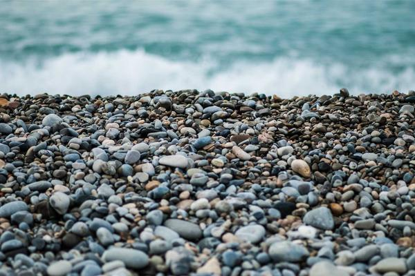

Bufanda de Lana
Bufanda tejida a mano con pura lana de oveja, ideal para el invierno.
+ Info
Poncho Norteño
Clásico poncho con guarda pampa, diseño tradicional y abrigado.
+ Info
Manta Rústica
Manta gruesa de hilo de algodón peinado para el sillón o la cama.
+ Info
Mate de Cerámica
Mate esmaltado a mano. Conserva la temperatura espectacular.
+ Info
Cuenco Pintado
Cuenco ideal para picadas o como decoración en la mesa.
+ Info

Jarrón de Arcilla
Jarrón rústico moldeado a mano para flores secas o frescas.
+ Info